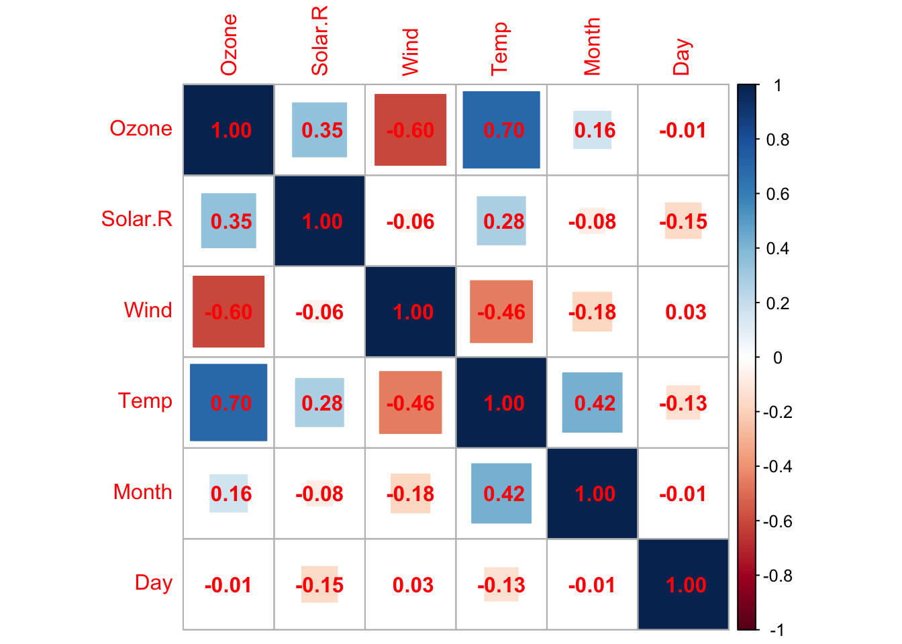

library(tidyverse,warn.conflicts = FALSE,verbose = FALSE)
library(skimr)
library(gtExtras)
library(svglite)
library(corrplot,warn.conflicts = FALSE)
library(knitr)
airquality_tbl <- airquality |> as_tibble()Week1-Code-Excerise
Task
Understanding the descriptive statistics for airquality
Calculate the mean of the Temp column in the
airqualitydata set. What is the mean temperature?What is the median value of the Temp column?
What is the range of values in the Temp column?
Calculate the variance of the Wind column. What is the variance?
Calculate the standard deviation of the Wind column. What is the result?
airquality_tbl |>
reframe(avg_temp = mean(Temp),
median_temp = median(Temp),
range_temp = toString(range(Temp)),
wind_var = var(Wind),
wind_std_dev = sqrt(var(Wind))
)# A tibble: 1 × 5
avg_temp median_temp range_temp wind_var wind_std_dev
<dbl> <int> <chr> <dbl> <dbl>
1 77.9 79 56, 97 12.4 3.52Summary statistics
airquality_tbl |>
skim() |>
kable()| skim_type | skim_variable | n_missing | complete_rate | numeric.mean | numeric.sd | numeric.p0 | numeric.p25 | numeric.p50 | numeric.p75 | numeric.p100 | numeric.hist |
|---|---|---|---|---|---|---|---|---|---|---|---|
| numeric | Ozone | 37 | 0.7581699 | 42.129310 | 32.987884 | 1.0 | 18.00 | 31.5 | 63.25 | 168.0 | ▇▃▂▁▁ |
| numeric | Solar.R | 7 | 0.9542484 | 185.931507 | 90.058422 | 7.0 | 115.75 | 205.0 | 258.75 | 334.0 | ▅▃▅▇▅ |
| numeric | Wind | 0 | 1.0000000 | 9.957516 | 3.523001 | 1.7 | 7.40 | 9.7 | 11.50 | 20.7 | ▂▇▇▃▁ |
| numeric | Temp | 0 | 1.0000000 | 77.882353 | 9.465270 | 56.0 | 72.00 | 79.0 | 85.00 | 97.0 | ▂▃▇▇▃ |
| numeric | Month | 0 | 1.0000000 | 6.993464 | 1.416522 | 5.0 | 6.00 | 7.0 | 8.00 | 9.0 | ▇▇▇▇▇ |
| numeric | Day | 0 | 1.0000000 | 15.803922 | 8.864520 | 1.0 | 8.00 | 16.0 | 23.00 | 31.0 | ▇▇▇▇▆ |
gt_plt_summary(airquality_tbl)| airquality_tbl | ||||||
|---|---|---|---|---|---|---|
| 153 rows x 6 cols | ||||||
| Column | Plot Overview | Missing | Mean | Median | SD | |
| Ozone | 24.2% | 42.1 | 31.5 | 33.0 | ||
| Solar.R | 4.6% | 185.9 | 205.0 | 90.1 | ||
| Wind | 0.0% | 10.0 | 9.7 | 3.5 | ||
| Temp | 0.0% | 77.9 | 79.0 | 9.5 | ||
| Month | 0.0% | 7.0 | 7.0 | 1.4 | ||
| Day | 0.0% | 15.8 | 16.0 | 8.9 | ||
correlation matrix plot
corrplot(cor(airquality_tbl,
use = "pairwise.complete.obs"), method = 'square',
addCoef.col = "red"
)